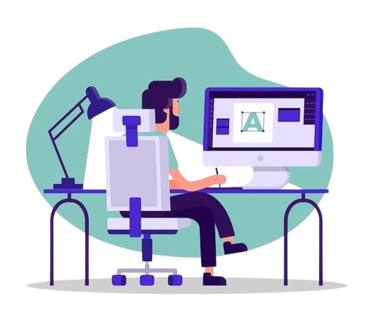
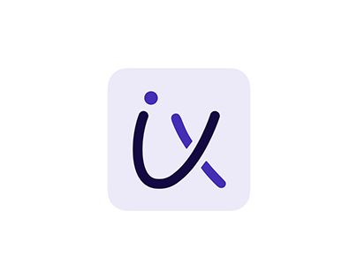

Hi, My name is Nagnath
and I am a passionate
Web Developer

Work Experience
HTML Developer(2022-24)
I am a proficient HTML developer with expertise in crafting responsive
and accessible web pages. My skills include creating clean, well-structured code
and ensuring compatibility across various browsers and devices. I am dedicated
to delivering user-friendly and visually appealing websites that meet modern web standards.
Node.js Developer(2022-24)
As a Node.js developer, you specialize in building efficient, scalable, and high-performance server-side
applications using JavaScript. With a strong understanding of asynchronous programming and
event-driven architecture, you are adept at creating APIs, working with databases, and integrating various
services to develop robust web applications. Your expertise in Node.js enables you to deliver reliable and
fast server-side solutions for modern web development needs.

Web Developer(2022-24)
As a skilled web developer with a passion for creating dynamic and user-friendly websites.
With expertise in HTML, CSS, JavaScript, and various web development frameworks, when delivers
high-quality, responsive designs and efficient code. Known for problem-solving abilities and attention
to detail, That consistently meets project deadlines and exceeds client expectations. Dedicated to continuous
learning and staying updated with the latest industry trends, It is committed to developing innovative web
solutions that enhance user experiences and drive business success.

Python Developer(2022-24)
I am a dedicated Python developer with a strong
background in designing and implementing robust software solutions.
My expertise spans various domains, including web development, data analysis, and
automation. With a deep understanding of Python's syntax, libraries, and frameworks,
I am skilled at creating efficient and scalable applications.
Java Developer(2022-24)
A Java developer specializes in using the Java programming language to create a wide range of
applications, from enterprise-level systems and mobile apps to web applications and embedded systems.
Java's platform independence, robustness, and extensive libraries make it a popular choice for many developers and organizations.

UX&UI Developer(2022-24)
As a UX/UI developer, you specialize in creating intuitive and
visually appealing user interfaces that enhance user experience.
Your expertise lies in understanding user needs, designing seamless
interactions, and ensuring that applications are both functional and
aesthetically pleasing.